Acondicionamiento
Preparación del material
Se revisa y acondiciona lo recolectado para sostener un proceso limpio y ordenado.

Ciclo Salta Proyecto piloto
Ciclo Salta es un proyecto piloto de recolección domiciliaria para personas que quieren separar sus residuos orgánicos, pero no tienen el espacio, el tiempo o la infraestructura para procesarlos en casa.
Proyecto piloto Cupos limitados Cobertura inicial reducida
Encaje
Separar tus residuos orgánicos puede ser simple. Nos ocupamos del procesamiento fuera de tu casa.
Querés separar orgánicos, pero no tenés espacio o patio para compostar.
Vivís en un departamento o en una vivienda pequeña y necesitás una solución ordenada.
Intentaste compostar en casa y no lograste sostenerlo en el tiempo.
Preferís un retiro periódico con balde limpio de reemplazo, sin gestionar el proceso vos.
Estás en Salta Capital y querés conocer si tu zona entra en la primera microzona del piloto.
Proceso
Un circuito claro, con etapas controladas. Empezamos chicos para construir una operación ordenada.
Paso 1
Guardás los residuos orgánicos admitidos en un balde limpio y cerrado.
Paso 2
Retiramos el balde según la frecuencia y zona definidas para el piloto.
Paso 3
Al retirar el material dejamos otro recipiente listo para utilizar.
Paso 4
Los residuos pasan por etapas controladas de acondicionamiento, compostaje y vermicompostaje.
Paso 5
El proceso produce compost y vermicompost para plantas, huertas y espacios verdes.
El material no se transforma de un día para el otro ni pasa directo a las lombrices. Primero se acondiciona y compostea; el vermicompostaje es una etapa posterior del proceso.
Orgánicos Proceso controlado Compost y vermicompost Suelo
Separación
Empezamos con una lista acotada para mantener un proceso limpio y controlado.
Estas listas son iniciales y podrán ajustarse durante el piloto según la operación y la calidad del material recibido.
Destino
El objetivo es transformar residuos orgánicos domiciliarios en enmiendas útiles para el suelo, con un proceso local y controlado.
Acondicionamiento
Se revisa y acondiciona lo recolectado para sostener un proceso limpio y ordenado.
Compostaje
El material pasa por compostaje como etapa central de transformación biológica.
Vermicompostaje
Parte del proceso puede continuar con vermicompostaje. No todo el material se procesa directamente con lombrices.
Resultado
Se obtiene material para plantas, huertas y espacios verdes. Durante el piloto no prometemos devolución garantizada a cada hogar.
Alcance
Empezamos con una microzona para construir una operación ordenada. Queremos conocer cuántos hogares están interesados.
Todavía estamos validando demanda, frecuencia y operación. No es un servicio consolidado a gran escala.
La recolección empezará en una microzona de Salta Capital. La zona exacta se confirmará según el interés registrado.
La capacidad operativa será acotada al inicio. Registrarse no garantiza ingreso inmediato.
Cuando se defina la primera microzona, contactaremos a las personas interesadas para coordinar los siguientes pasos.
Territorio
La primera etapa será acotada. Si tu barrio está cerca de la microzona piloto, escribinos.
Microzona piloto (placeholder)
[Barrio / microzona — por definir]
Microzona piloto en Salta Capital (detalle próximamente). Dejá tu barrio en el formulario para que podamos evaluar cercanía y demanda.
Dudas
Respuestas claras sobre el alcance actual del piloto.
Estamos en etapa de validación. Esta página busca reunir personas interesadas para definir la primera microzona y la operación inicial.
No. Registrarse expresa interés. Los cupos serán limitados y la cobertura inicial, reducida. Te contactaremos cuando se defina la microzona.
La frecuencia todavía no está definida. Se va a ajustar según demanda, zona y capacidad operativa del piloto.
En esta etapa el objetivo no es cobrar: queremos validar interés. Si más adelante hay un modelo de contraprestación, se comunicará con claridad.
El proceso produce compost y vermicompost, pero durante el piloto no garantizamos devolución a cada hogar. El foco inicial es recolectar, procesar bien y aprender de la operación.
El balde debe mantenerse limpio y cerrado, y solo con materiales admitidos. Eso reduce olores e insectos. Si surge un problema, se puede ajustar la guía durante el piloto.
Participación
Dejanos tus datos para evaluar interés en tu zona.
Completá el formulario y se abrirá WhatsApp con un mensaje listo para enviar. También podés escribirnos directo si preferís no completar el formulario.
Registrarse no garantiza ingreso inmediato. Cupos limitados. Cobertura inicial reducida.
Escribir por WhatsApp sin formulario